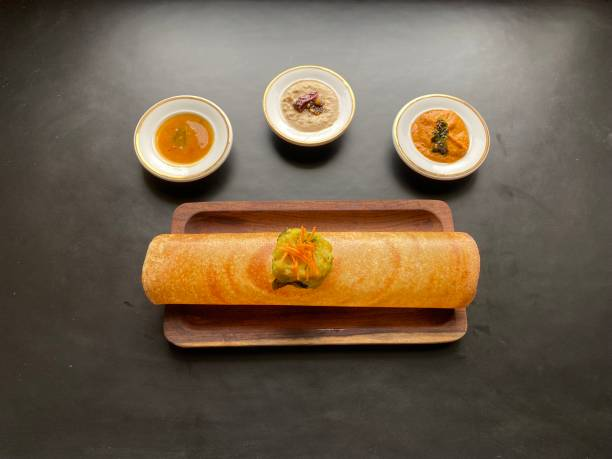

Dosa

Description
Dosa is a thin, savory crepe made from a fermented batter of rice and urad dal (black lentils). It is a staple South Indian breakfast, often served with a variety of chutneys and sambar.
Ingredients
-
For Dosa Batter
- 2 cups raw rice (idli rice or sona masuri)
- 1/2 cup urad dal (split black lentils)
- 1 tsp fenugreek seeds (methi)
- Water for soaking and grinding
- Salt to taste
-
For Potato Filling (Masala Dosa)
- 2-3 medium potatoes, boiled and mashed
- 1 large onion, finely chopped
- 1/2 tsp mustard seeds
- 1/2 tsp turmeric powder
- 1/2 tsp red chili powder
- A pinch of asafoetida (hing)
- 2 tbsp cooking oil
- Fresh coriander leaves, chopped
- Salt to taste
Steps
-
For Dosa Batter
- Soak: Wash the rice and urad dal separately. Soak the rice in water for at least 6 hours. Soak the urad dal and fenugreek seeds together in a separate bowl for the same amount of time.
- Grind: First, drain the urad dal and fenugreek seeds and grind them in a wet grinder or blender with a little water until you get a very smooth and fluffy batter. Transfer to a large container. Next, drain the rice and grind it to a smooth paste, adding water as needed. Combine the rice and dal batters in the container.
- Ferment: Mix the batter well with your hands. This is important for fermentation. Add salt and mix again. Cover the container and let it ferment in a warm place for 8-12 hours, or overnight. The batter should have risen and be slightly bubbly.
-
For Masala Dosa Filling
- Prepare the Filling: Heat oil in a pan. Add mustard seeds and let them splutter. Add asafoetida and chopped onions, and sauté until they become soft. Add the turmeric powder and red chili powder, and stir for a minute.
- Combine: Add the mashed potatoes to the pan. Season with salt and mix well. Cook for 2-3 minutes. Garnish with fresh coriander.
-
Making the Dosa
- Heat Tawa: Heat a non-stick tawa (griddle) or a cast-iron skillet on medium-high heat. To check if it's hot enough, sprinkle a few drops of water; they should sizzle and evaporate immediately.
- Pour the Batter: Lower the heat slightly. Take a ladleful of dosa batter and pour it onto the center of the tawa. Using the back of the ladle, spread the batter in a circular motion, from the center outwards, to form a thin, round crepe.
- Cook: Drizzle a little oil or ghee around the edges and on top of the dosa. Cook until the bottom turns golden brown and crispy.
- Fill and Fold: For Masala Dosa, place a spoonful of the potato filling in the center of the dosa. Fold it in half or roll it up.
- Serve: Serve the hot dosa immediately with sambar and coconut chutney.
Home